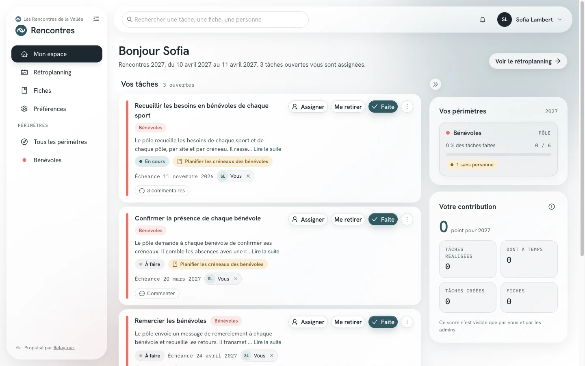
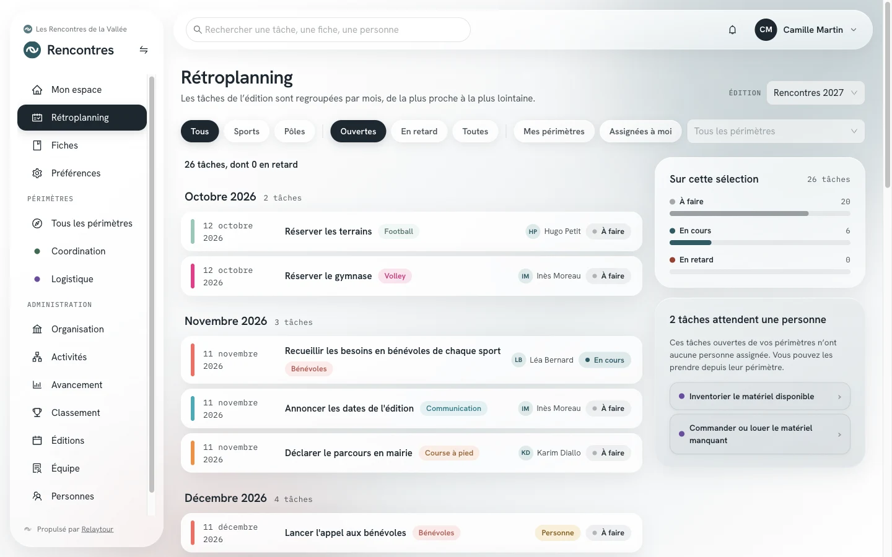
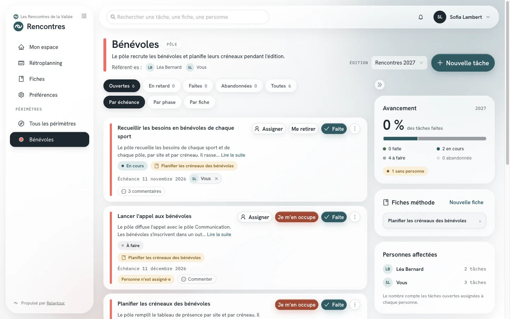
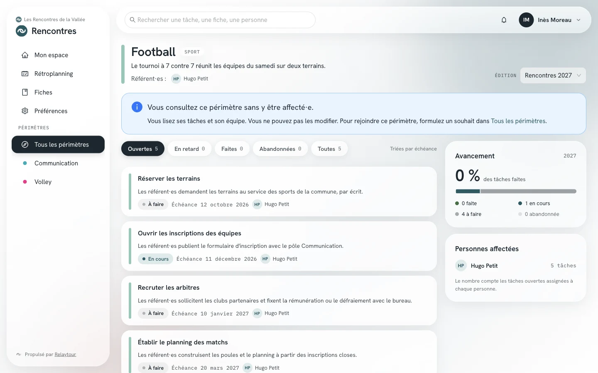
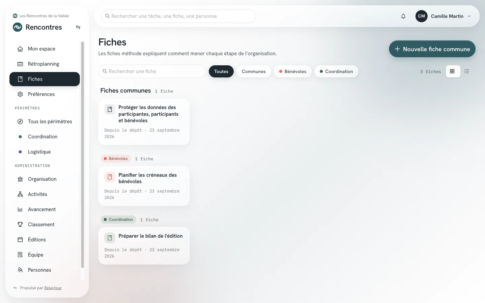
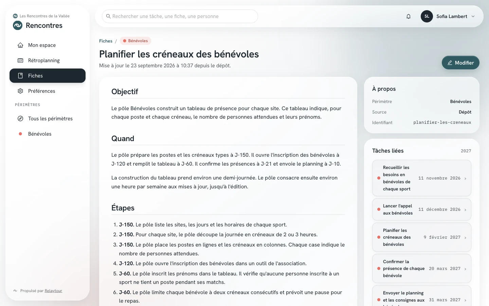
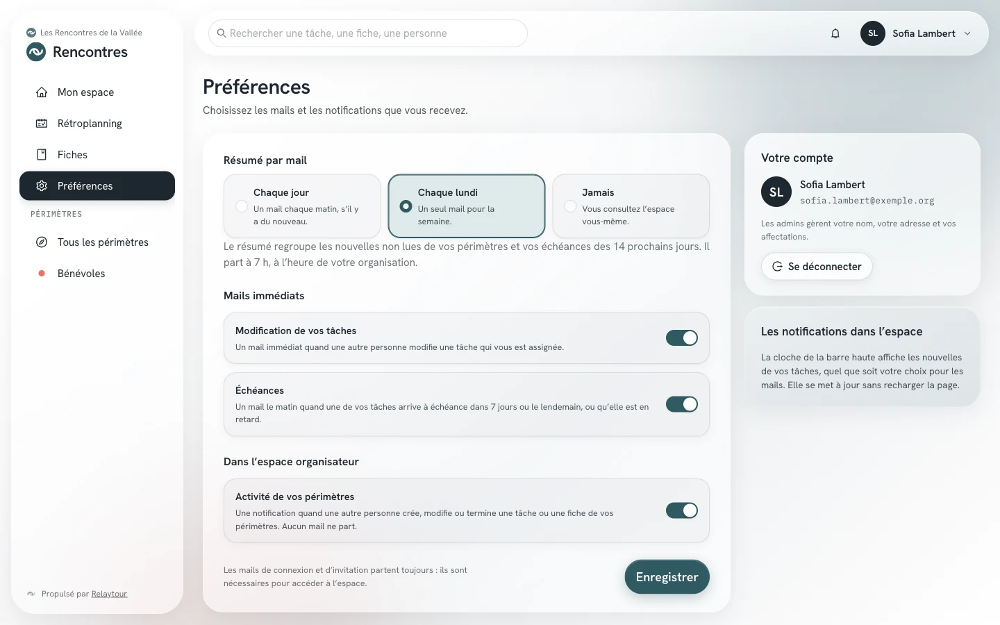

Le menu de gauche
Il donne accès à Mon espace, au Rétroplanning, aux Fiches et aux Préférences. La section « Périmètres » commence par « Tous les périmètres », puis liste chaque périmètre où vous êtes affecté·e.
Vous êtes affecté·e à un ou plusieurs périmètres pour une période. L'espace organisateur vous montre vos tâches, leurs échéances et les fiches méthode qui expliquent comment les mener.
Ce mode d'emploi décrit les écrans ouverts à toute personne affectée. Si vous administrez une activité ou l'organisation, reportez-vous au mode d'emploi correspondant pour le menu « Administration ».
L'espace ne demande pas de mot de passe. Vous saisissez votre adresse mail, vous recevez un code à six chiffres, valable dix minutes, et vous le reportez dans l'écran de connexion. Le mail contient aussi un lien : il vous connecte directement quand vous l'ouvrez dans l'onglet où vous avez demandé le code.
Seules les personnes invitées par un admin peuvent se connecter. Si votre compte n'appartient à aucune organisation ouverte, l'écran vous invite à demander une nouvelle invitation.
Il donne accès à Mon espace, au Rétroplanning, aux Fiches et aux Préférences. La section « Périmètres » commence par « Tous les périmètres », puis liste chaque périmètre où vous êtes affecté·e.
Elle porte la recherche (une tâche, une fiche, une personne), la cloche des notifications et le menu de votre compte. Ce menu mène aussi aux modes d'emploi.
Les adresses commencent par l'identifiant de l'activité affichée, par exemple /rencontres/retroplanning. Le mot « édition » devient « saison » ou « mandat » selon la nature de l'activité.
La page d'accueil réunit les tâches qui vous sont assignées, les tâches de vos périmètres que personne n'a prises, l'avancement de chacun de vos périmètres et votre contribution à la période en cours.

Votre score n'est visible que par vous et par les admins. Il compte les tâches réalisées, celles rendues à temps, les tâches créées et les fiches écrites.
Les tâches de la période sont regroupées par mois, de la plus proche à la plus lointaine. Le rétroplanning couvre tous les périmètres de l'activité. Les filtres limitent l'affichage à un groupe de périmètres, aux tâches ouvertes ou en retard, à vos périmètres ou aux tâches qui vous sont assignées.

Aucune action ne se fait ici : une ligne mène à son périmètre. Vous y modifiez la tâche si vous êtes affecté·e à ce périmètre. Le panneau de droite signale les tâches de vos périmètres qui attendent encore une personne.
Cette page présente chaque périmètre de l'activité avec sa description. Elle les range en trois blocs : vos périmètres, vos souhaits, puis les autres périmètres. Chaque périmètre indique le nombre de personnes encore recherchées. Ce nombre est une information : vous pouvez formuler un souhait pour un périmètre au complet. La page ne montre ni tâche, ni fiche, ni nom de personne.
Quand une activité est ouverte aux souhaits, tous les membres de l'organisation voient cette page. Une personne sans affectation ne voit qu'elle et ses préférences, jusqu'à sa première affectation.
La page de votre périmètre réunit ses tâches, son avancement, ses fiches méthode et les personnes affectées. Les tâches se filtrent par statut : ouvertes, en retard, faites, abandonnées ou toutes.
Le contact principal du périmètre, s'il est désigné, apparaît en tête des personnes affectées avec la mention « Contact principal ». C'est la personne à solliciter en premier. Elle a les mêmes droits que les autres référentes et référents.

Ces actions sont ouvertes aux personnes affectées au périmètre pour la période consultée. Une période archivée passe ses tâches en lecture seule.
Le panneau « Proposer une personne » liste vos propositions et leur état : en attente, acceptée ou refusée. Vous retirez une proposition tant qu'elle attend.
Vous consultez aussi les autres périmètres de votre activité. Leur page affiche les tâches, l'avancement et les personnes affectées. Elle ne montre aucune fiche et ne propose aucune action, et un bandeau le rappelle. Pour rejoindre un périmètre, formulez un souhait dans « Tous les périmètres ».

Toute l'équipe de l'activité lit le titre et la description d'une tâche. N'y écrivez aucune coordonnée personnelle.
Les fiches méthode expliquent comment mener chaque étape de l'organisation. Elles se filtrent par périmètre, se cherchent par mot et s'affichent en cartes ou en liste condensée.

Chaque fiche indique sa date de mise à jour et son auteur, ou la mention « Depuis le dépôt » quand elle vient du dossier de contenu de l'organisation.
Une fiche décrit une démarche étape par étape, souvent avec ses échéances en J-n. Le panneau « Tâches liées » donne les tâches de la période en cours qui renvoient à cette fiche.

Écrivez les contacts sous forme de rôles, sans adresse ni numéro personnels : une fiche qui en contient ne peut pas être reversée dans le dépôt de l'organisation. L'historique des versions est réservé aux admins.
Vous choisissez les mails que vous recevez, et les notifications de vos périmètres. Les notifications de vos tâches restent visibles dans l'espace, quel que soit votre choix pour les mails.

Votre nom, votre adresse et vos affectations sont gérés par les admins. Les mails de connexion et d'invitation partent toujours.
Plusieurs référentes et référents partagent souvent un périmètre. Relaytour met vos écrans à jour pendant que les autres travaillent, et vous avertit quand deux saisies se croisent. Quatre habitudes évitent la plupart de ces croisements.
Cliquez sur « Je m'en occupe » avant de corriger une tâche ou de la mener. Votre nom s'affiche sur la tâche, et votre équipe voit qu'elle est prise.
Le menu « Autres actions » propose « Marquer en cours ». Les autres référentes et référents du périmètre reçoivent alors une notification qui annonce que vous avez commencé.
Prévenez votre équipe avant de reprendre une fiche. Relaytour ne fusionne pas deux rédactions menées en même temps : la seconde personne qui enregistre choisit entre les deux textes.
Quand Relaytour annonce un conflit, lisez d'abord la version de l'autre personne. « Écraser » remplace son travail par le vôtre. Réservez ce choix à une version que vous avez lue.
Quand une autre personne modifie une tâche, une fiche, un périmètre ou l'équipe, votre écran affiche le changement en quelques secondes. Vous ne rechargez pas la page. La cloche reçoit ses notifications de la même façon.
Ce suivi s'arrête quand l'onglet est caché, et l'écran se relit à votre retour. Sur un réseau qui bloque ce suivi, les écrans se relisent chaque minute. L'éditeur d'une fiche ne change jamais pendant votre rédaction.
Le bandeau « Vos accès ont changé, ou votre session a pris fin. » signale que l'écran ne peut plus se relire. Rechargez alors la page.
Relaytour n'enregistre pas votre modification à la place d'une modification que vous n'avez pas vue. Une fenêtre indique qui a modifié la tâche, et quand.
La même fenêtre s'ouvre quand le statut d'une tâche a changé avant votre clic. Elle donne le statut actuel, sans nommer la personne qui l'a changé. Prendre une tâche ou vous en retirer ne provoque aucun conflit.
Si une autre version de la fiche a été enregistrée pendant votre rédaction, l'éditeur n'enregistre pas la vôtre. Un avis indique qui a enregistré cette version, et quand. Votre texte reste à l'écran.
L'éditeur garde aussi un brouillon de votre rédaction dans votre navigateur. Si vous quittez l'éditeur sans enregistrer, il vous propose à votre retour « Reprendre le brouillon » ou « Supprimer le brouillon ».
Le brouillon reste dans ce navigateur : il n'existe sur aucun autre appareil. Il est effacé quand vous enregistrez, quand vous abandonnez la rédaction et quand vous vous déconnectez.
Quand une autre personne crée, modifie, commence, termine ou abandonne une tâche de votre périmètre, vous recevez une notification. Vous en recevez une aussi quand elle crée ou modifie une fiche du périmètre. Un clic sur la notification d'une tâche ouvre le périmètre et met cette tâche en évidence.
Aucun mail ne part pour ces notifications. Une tâche terminée est annoncée sans nom : seuls la personne qui l'a cochée et les admins savent qui l'a terminée. Le réglage « Activité de vos périmètres », dans vos Préférences, désactive ces notifications.
Vous modifiez les tâches et vous lisez les fiches des périmètres où vous êtes affecté·e. Vous consultez les tâches des autres périmètres de l'activité, sans leurs fiches. Une affectation passée garde l'accès aux archives du périmètre.
Vous formulez un souhait dans « Tous les périmètres », et un admin procède aux affectations. Une personne extérieure à l'équipe dépose une demande par le formulaire public, quand un admin l'a ouvert.
Si vous participez à plusieurs activités, un bouton en haut du menu permet de changer d'activité. Il reste masqué quand vous n'en voyez qu'une.
Une période s'appelle édition pour un événement, saison pour une section, mandat pour une instance. Les groupes de périmètres portent les noms déclarés par l'activité.
« Cette organisation est en lecture seule » signifie que plus aucune modification n'est acceptée. « Cette activité est archivée » signifie que l'activité reste consultable, sans modification.
Les admins disposent d'un menu « Administration ». Leurs modes d'emploi le décrivent, en complément de celui-ci.